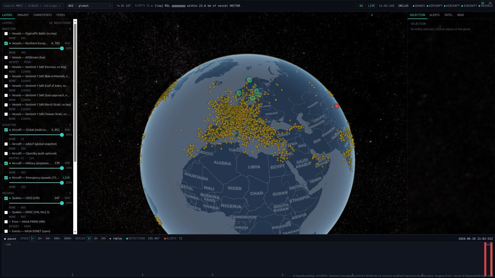
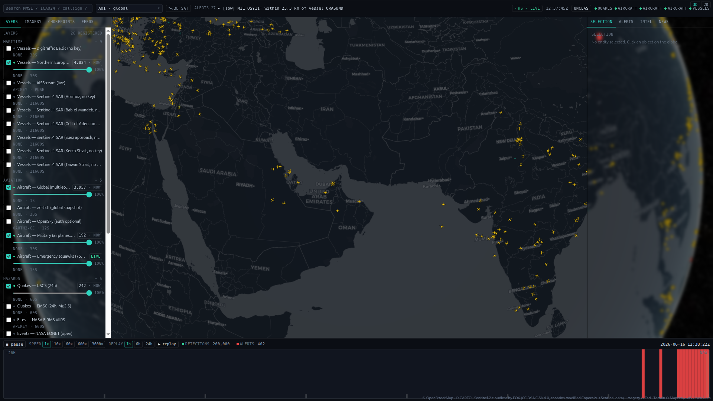
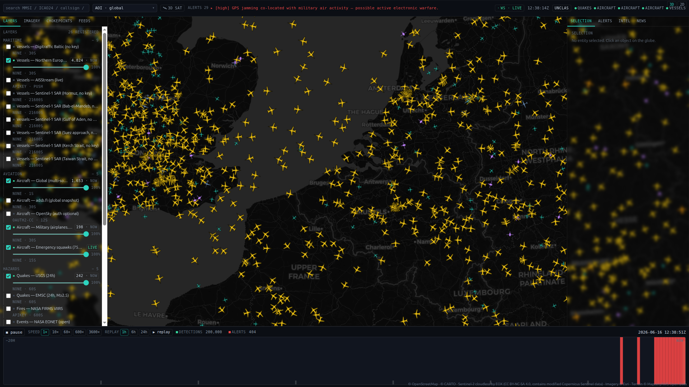
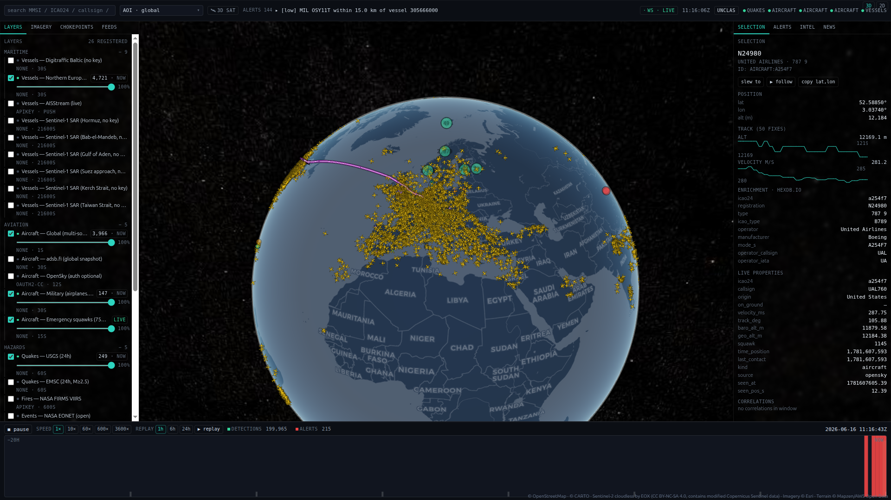

Sentinel-1 VV log-ratio over a pre/post window → collapse candidates.
ALL-SOURCE · DEFENSE-GRADE · HOSTED
See what
moved.
From orbit.
A live 3D globe that fuses aircraft, ships, satellites, GPS jamming and cyber outages — and reads war damage straight off Sentinel-1 radar. Then hands the whole picture to an AI agent.
0aircraft, live
0fused feeds
0conflict AOIs
14-dayfree trial
CONVERGENCE
The signal lives in the seam between feeds.
A dark ship on radar with no AIS. Aircraft losing GPS over the same bay. Velocity correlates across domains and promotes the overlap to one cited incident — automatically.
01 — DAMAGE ASSESSMENT · FROM SPACE
Two radar passes.
Two radar passes.
Twelve days apart.
Collapsed buildings stop bouncing radar the way they used to. Velocity diffs Sentinel-1 backscatter across a conflict window, then extrudes OSM footprints into LOD1 3D — every collapse candidate flagged. All-weather, day or night, free satellite.
RECON ▸ BEIRUT — DAHIEH
S1 VV · LOG-RATIO
DRAG TO ORBIT
INTACTCOLLAPSE CANDIDATE
SAR change-detection finds change, not proof of damage — flood, construction and speckle also move backscatter. Output is a candidate, meant to be validated against UNOSAT / Copernicus EMS. Velocity never ships an unverified damage claim. Footprints are real OSM; heights are OSM tags or a flagged estimate. No invented geometry.
FROM ORBIT TO 3D
Four steps. No human in the loop.
- 01
Two SAR passes
Sentinel-1 VV backscatter, ~12 days apart, same orbit and grid. It's radar — cloud and darkness don't matter.
- 02
Log-ratio diff
log((post+1)/(pre+1)). A backscatter drop means the structure that was bouncing radar isn't anymore.
- 03
Real footprints
OSM building polygons + heights for the AOI. Tagged or estimated heights, flagged per building. No invented geometry.
- 04
Extrude & flag
LOD1 3D in the globe; every footprint over a collapse cell turns red — a candidate for an analyst to confirm.
02 — WHAT IT DOES
Six hard problems, one console.
Real OSM footprints + heights extruded, per-building damage flag.
A ship on radar where AIS says no one is — Sentinel-1 × AIS gap.
ADS-B NACp<8 / NIC<7 binned to a 1° grid — the GPSJam method, live.
≥2 domains in one place/time → a single cited incident.
22 tools, bounded JSON — sweep the planet for a few hundred tokens.
ONE UNION
58 open feeds, deduped into one picture.
OpenSkyairplanes.liveadsb.loladsb.fiSentinel-1 SARSentinel-2NASA FIRMSNASA EONETNASA GIBSDigitraffic AISKystverketAISStreamCelesTrakUSGSEMSCNOAA SWPCOpen-MeteoCarto basemaps
OpenSkyairplanes.liveadsb.loladsb.fiSentinel-1 SARSentinel-2NASA FIRMSNASA EONETNASA GIBSDigitraffic AISKystverketAISStreamCelesTrakUSGSEMSCNOAA SWPCOpen-MeteoCarto basemaps
GDELTACLEDIODACloudflare RadarOpenStreetMapOverpassTeleGeography cablesGlobal Fishing WatchWikidataEsri imageryNominatimKystdatahusetBBCReutersAl JazeeraFrance24NPRSubmarine Cable Map
GDELTACLEDIODACloudflare RadarOpenStreetMapOverpassTeleGeography cablesGlobal Fishing WatchWikidataEsri imageryNominatimKystdatahusetBBCReutersAl JazeeraFrance24NPRSubmarine Cable Map
03 — THE CONSOLE
A cockpit for one analyst.




WHO RUNS IT
For people who can't wait for the report.
Conflict journalists
Corroborate a strike, a dark tanker, a jamming claim — in minutes, reproducibly, behind no paywall.
Defense & OPSEC
Watch your own GNSS health and coastline — and exactly what your forces leak into the open feeds.
OSINT desks
Six monitors collapse into one globe. Cross-domain incidents surface themselves, cited.
AI-agent builders
Give a model live eyes on the planet over MCP — bounded JSON, not a brittle scrape.
Open data is everywhere.
Reading it like a professional is the hard part.
Velocity is the console that does it — hosted, managed, agent-ready.
04 — AGENT-NATIVE
Ask the planet a question.
Velocity is a Model Context Protocol server — 22 tools over streamable-HTTP. An agent calls a tool, gets bounded JSON — no scraping, no guessing.
$ claude mcp add --transport http velocity \
https://projectvelocity.org/mcp \
--header "Authorization: Bearer $VELOCITY_TOKEN"Works with any MCP client — Claude Code, Claude Desktop, the Agent SDK. The endpoint is https://projectvelocity.org/mcp; authenticate with your Velocity access token (grab it from Account after sign-in). Nothing to install, no backend to run — it's the same hosted feeds the globe renders.
0fused feeds
0conflict AOIs
0agent tools (MCP)
0refresh cadence
Hostedfully managed
05 — LIVE
Live snapshot
Sampled from a running backend.
0aircraft
0military
0vessels
0jamming cells
0incidents
0cables
GET STARTED
Signup to live globe in minutes.
Fully hosted — we run the feeds, the fusion engine and the agent endpoint. No infrastructure, no data wrangling on your side.
- 01
Start your trial
14 days, full platform, no card to look around.
- 02
Pick your theatre
Drop pins on the AOIs you watch; we keep them warm and fresh.
- 03
Wire the agent
One
claude mcp addcommand points any MCP client at the hosted endpoint with your token — 22 tools, bounded JSON. - 04
Bring restricted data
Connect ACLED / commercial imagery via BYOK on Team and up.
06 — PRICING
One analyst to a whole desk.
Hosted, managed, billed monthly. 14-day free trial on Analyst & Team — no card to start.
Analyst
$99/ month
Solo · hosted
- Live globe — all cleared feeds
- SAR damage + LOD1 3D
- MCP agent endpoint (your token)
- GeoJSON / CSV / KML export
- 3 warm AOIs
Team
$499/ month
Up to 5 seats
- Everything in Analyst
- BYOK restricted feeds — ACLED, commercial imagery, global AIS
- Shared workspaces + alerting
- 15 warm AOIs, priority refresh
- Standing-watch & threat push
Enterprise
Custom
On-prem · air-gap · SLA
- On-prem / air-gapped deploy
- SSO, roles, audit trail
- Persistence + replay
- Fusion with your own sensors
- Dedicated support & SLA
ROADMAP
Where it's going.
- P0Foundation
- P1Live ADS-B · AIS · quakes · jamming
- P3Fusion engine · alerts · 2D mirror
- P4MCP server + intel API — shipped
- P2Replay + persistence (Postgres · Timescale)
STRAIGHT ANSWERS
What you're already wondering.
Is the war-damage output verified?
No — and we say so on the box. SAR change-detection flags candidates for an analyst to validate against UNOSAT / Copernicus EMS. It's a fast first pass, not a verdict.
Is there a free tier?
A 14-day trial on Analyst & Team — full platform, no card to start. After that it's paid; there's no free production tier.
How do restricted data feeds work?
Open and commercially-cleared sources are included. Restricted feeds (ACLED, commercial imagery, global AIS) run BYOK on Team and Enterprise — you bring a licence, we plug it in. We never resell non-commercial data.
Can I self-host or get the source?
Velocity is a hosted product. On-prem / air-gapped deployment is available on Enterprise; otherwise we run it for you.
Is it real-time?
Aircraft refresh about every second. SAR is per satellite pass (days). History & replay are on Enterprise.
Will it run on my machine?
It's a browser app — runs on any modern machine. The heavy 3D-satellite mode wants a real GPU; the 2D dark globe runs anywhere.
07 — DATA & COMPLIANCE
What we sell — and what we won't.
Cleared feeds · included
Open-government and commercially-cleared sources — USGS, NASA, Copernicus / Sentinel, GDELT, IODA and more — are in every plan.
Restricted feeds · BYOK
Some feeds are non-commercial (ACLED, adsb.fi, OpenSky). We do not resell them. On Team+ you connect your own licensed access; compliance stays with the key-holder.
The platform · your subscription
Hosted console, fusion engine, agent endpoint and support. You get access — not a licence to redistribute.
SAR damage output is an analyst-validation candidate, not a verified claim. Built for lawful, defensive use.